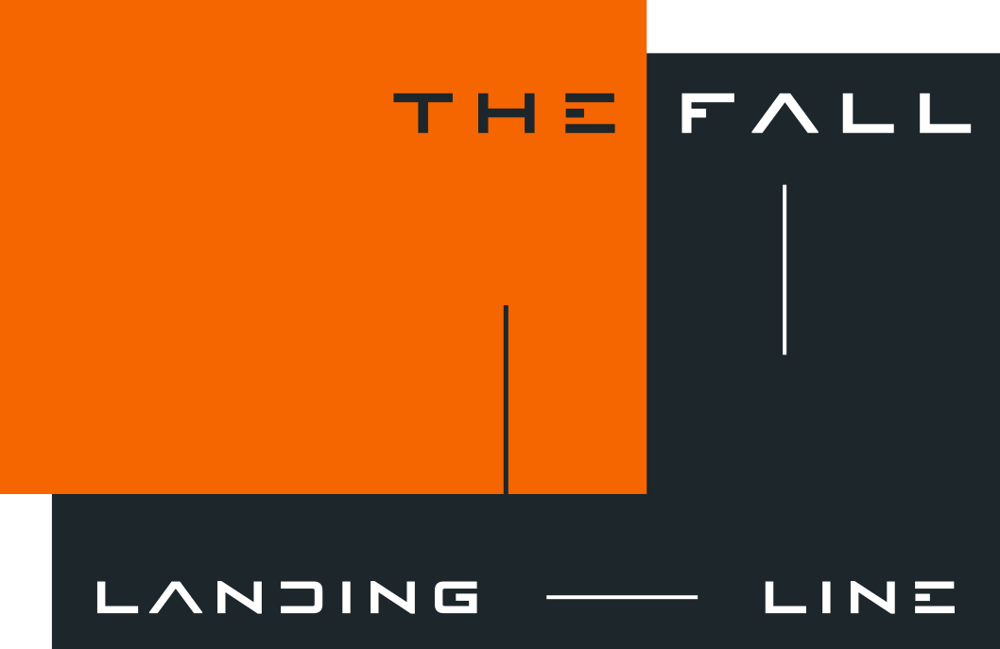

A Saga of Descents
雨は四十年、やんでいなかった──。
仮想空間の潜行者ミラ・ハーロウは、失踪した少女を追って、 地図にない惑星〈ターラ〉に降りる。出口を断たれた水の世界で 彼女が知ったのは、世界そのものが誰かに書き続けられている 〈原稿〉だという事実、そして、掌をかざすだけで世界の動きを 退けてしまう、自分自身の手の形だった。
神とされることを拒んだその〈手の形〉は、千年を隔ててなお、 別の手へと書き写されていく。本編『FALL-LINE』。 月面に立つ六角柱の黒い鏡面体〈黒筐〉に触れるか触れないか── そのひとつの選択から始まる前史『FALL-LANDING』。
― 〈潜降〉と〈継承〉、千年の途切れぬ連鎖 ―
① 本編
FALL-LINE フォールライン
雨の都市の潜行者ミラ・ハーロウから、千年後の子孫カイへ。 全六章＋エピローグの長編サーガ。物語の中心となる一作。
② 別冊（分岐小説）
FALL-LANDING フォールランディング
本編の前史にあたる外伝。月面に立つ六角柱の黒い鏡面体〈黒筐 （こっきょう）〉に「触れる／触れない」を選ぶと、物語が二つに 裂け、二度と交わらない。読者がルートA・Bを選んで最後まで歩く、 分岐型の中編。